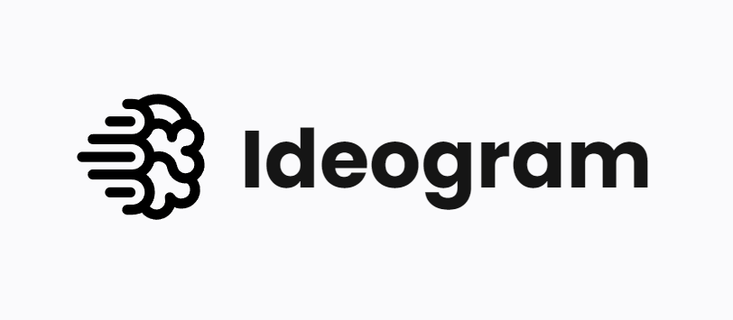
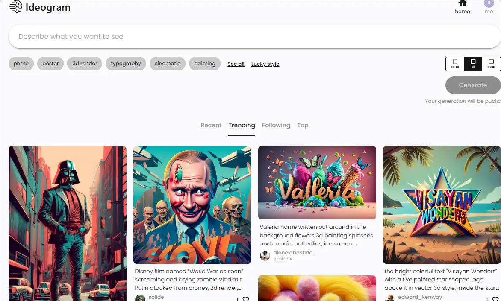

Here is how i'm using AI to generate my blog images for free
Posted on #Generative AI

Ideogram is a new artificial intelligence that can generate images from text. What makes Ideogram stand out from other famous models like DALL-E3 is that it can handle text almost perfectly, for example, the image you see above was generated with Ideogram and I didn't add the text afterwards, cool isn't it?
What is Ideogram AI?
Developed by former Google Brain researchers, Ideogram is an AI image generator that is leading the way in its field. It has advanced capabilities that set it apart from its competitors like MidJourney and DALL-E 3. This innovative platform has captured the attention of the tech world and it has a lot to offer for businesses and individuals looking to generate high-quality images with ease.
- Magic Prompt: Ideogram can transform your short prompt into a more detailed and descriptive output that accurately reflects your vision. Whether you want a funny meme about cats or a comprehensive overview of each element of the cat, Ideogram's magic prompt has got you covered!
- Improved Text Rendering Engine: Ideogram's text rendering engine is a game-changer when it comes to generating accurate and legible text. You can see the impressive results of this feature in all the images produced by Ideogram, which were generated from prompts inputted into the tool.
- Diversity of content: Ideogram is also dedicated to promoting diversity in media generation. Unlike other AI-powered tools, Ideogram actively creates images that represent a wide range of cultures, backgrounds, and perspectives. This commitment to inclusivity ensures that Ideogram's AI-generated content reflects the richness and variety of human experiences, making it a truly remarkable tool for content creators and businesses alike.
How can you use it
To access ideogram.ai, simply visit their website and log in using your Google or Apple ID. Once you're logged in, you'll see a menu similar to other AI models like DALL-E3, Bing AI, and MidJourney. From there, you can let your imagination run wild and search for anything that comes to mind. If you're having trouble coming up with ideas, you can also find inspiration from other people's images by clicking on the pictures below the search bar.
Is it free?
Ideogram AI has multiple pricing options available, but for regular use, it is completely free. With the free plan, you are permitted to create up to 25 images per day. However, you may need to wait in a queue depending on the number of images you have already generated. If you're interested in learning more, you can visit their website by clicking here.
Conclusion
In conclusion Ideogram AI is an advanced image generator that offers remarkable features like the Magic Prompt that automatically improves and expands your prompt and Improved Text Rendering. It's committed to promoting diversity in media generation, making it a valuable tool for businesses and content creators. This is the perfect tool for those looking to generate high-quality images quickly and easily.